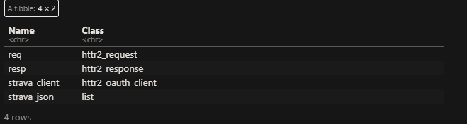

This document walks through how to connect to Strava’s API.
Author
Lucas Albracht
Published
March 13, 2024
Libraries
Code
#Install and load the required packages if not already installed:if (!require(pacman)) install.packages("pacman")
Loading required package: pacman
Code
p_load(tidyverse,DiagrammeR,networkD3,gt,httr2,jsonlite,conflicted,httpuv)#Conflicted package set to prefer dplyr over others: conflicted::conflicts_prefer(dplyr::filter)
[conflicted] Will prefer dplyr::filter over any other package.
Code
conflicted::conflicts_prefer(dplyr::data_frame)
[conflicted] Will prefer dplyr::data_frame over any other package.
API Connection steps | Overview
Disclaimer
This document serves as a walk through for connecting to API’s through R using the httr2 package. In this instance I will be attempting to connect to Strava’s API. I do not own this information (aside from my personal Strava data) and this is simply a collection of notes to aid in my own learning process. I am aware of the package rStrava and I drew from their package for inspiration here. I explicitly used their ratelimit function below and I have properly credited them for that. My secondary goal with this document is to familiarize myself with httr2 which is why I have not opted to use existing packages, and instead experiment with this package.
This walk through is intended to summarize what I have learned and make the pain points more digestible. However, I cannot cover everything, with that in mind reading the documentation is still the best way to familiarize yourself with this process.
OAuth2.0
Authentication - Strava uses OAuth 2.0 as its method of authentication. Below is how I break this down in my mind:
OAuth is an authorization framework that allows third party applications to access data on behalf of a user. These are the parties involved in this transaction:
Resource Owner: The entity that owns the resource and is capable of granting access to it. Typically, this is the end-user.
Client: The application requesting access to the resource on behalf of the resource owner. This is often a third-party application.
Authorization Server: The server that authenticates the resource owner and issues access tokens after getting proper authorization.
Resource Server: The server hosting the protected resources, capable of accepting and responding to protected resource requests using access tokens
Authorization flowchart
Client credentials flow - I believe that Strava is using this type of authorization. Their docs state they allow external apps to request user data, and users can grant and revoke API access on a “per-application” basis. With this method authentication is done using a client ID and secret. The returned access token grants the client access to specific, predefined scopes.
Access Token: A token that represents the authorization granted to the client.
Code
#|format: html#|code-fold: true#|label: OAuth-flowchart#|fig-cap-location: top#|fig-cap: OAuth visualizationnode_ht <-2node_w <-1Diagram <-create_graph(directed =FALSE,attr_theme ="lr") %>%#theme is set "Left to Right"# add_node() & node_aes() are all geared # toward formatting node attributes: color, height, shape etc. ----add_node(node_aes =node_aes(shape ="rectangle",color ="steelblue",fillcolor ="#007AC1",fontcolor ="White",width =2,height =5, ),type ="B",label ="Application\n(Client)\n(My Strava App)") %>%add_node(node_aes =node_aes(shape ="rectangle",color ="steelblue",fillcolor ="#FDBB30",fontcolor ="White",width = node_w,height = node_ht,x =5 ),type ="A",label ="User\n(My Strava\nProfile)") %>%add_node(node_aes =node_aes(shape ="rectangle",color ="steelblue",fillcolor ="mediumvioletred",fontcolor ="White",width = node_w,height = node_ht, ),type ="A",label ="Authorization\nServer") %>%add_node(node_aes =node_aes(shape ="rectangle",color ="steelblue",fillcolor ="Orangered",fontcolor ="White",width = node_w,height = node_ht, ),type ="A",label ="Resource\n Server") %>%# Edge creation and formatting - "edges" are the arrows that connect our nodes.# Edges show the flow of info through our charts. Due to the exchange in our data we will see 6 edges:add_edge(from =1, to =2,edge_aes =edge_aes(label ="1.)Authorization is requested from the\n app to the user/profile/data owner.",fontsize =12,penwidth =5,color ="Orange",arrowsize = .5,tailport ="n",headport ="n",dir ="forward" )) %>%add_edge(from =2, to =1,edge_aes =edge_aes(label ="2.)User grants authorization to the app.",fontsize =12,penwidth =5,color ="Orange",arrowsize = .5,dir ="forward" )) %>%add_edge(from =1, to =3,edge_aes =edge_aes(label ="3.)App sends the authorization grant\nto the authorization server",fontsize =12,penwidth =5,color ="Orange",arrowsize = .5,headport ="n",dir ="forward" )) %>%add_edge(from =3, to =1,edge_aes =edge_aes(label ="4.)Access token is granted to the app.",fontsize =12,penwidth =5,color ="Orange",arrowsize = .5,tailport ="w",dir ="forward" )) %>%add_edge(from =1, to =4,edge_aes =edge_aes(label ="5.)Access token is sent from app\nvia HTTP|GET request.",fontsize =12,penwidth =5,color ="Orange",arrowsize = .5,dir ="forward",headport ="w" )) %>%add_edge(from =4, to =1,edge_aes =edge_aes(label ="6.)Access to resource data\nis granted to the application.",fontsize =12,penwidth =5,color ="Orange",tailport ="s",headport ="s",dir ="forward"))# Render the graph ----render_graph(Diagram)
HTTP
Hyper Text Transfer Protocol - HTTP serves as the underlying “protocol” or rules/procedures that Strava’s API uses. In the context of connecting to an API in R we need a library that can handle this, which is where the httr2 package comes into play. Below are some of the key concepts of connecting using HTTP
Request | Response model - We mentioned this above and displayed this in our flowchart:
Client - App creator | request maker
Server - Resource owner | responds to the request
HTTP Methods - There are a number of methods, for our purposes the “GET” method is the only one we will use. This method is a request to retrieve data from the server.
URIs | URLs - Uniform resource identifier also known as uniform resource locator specifies the address of the resource.
Base URL - This can be found in the API documentation:
Data formats - The next consideration we have to make is the structure of the data that the API contains. There are two common formats; JSON (JavaScript Object Notation) and XML (extensible Markup Language). Strava’s structure is JSON so we are going to recruit the jsonlite package to help parse and map the API’s data into R objects.
API Application
In this step we are going to put everything together. Using what we know about HTTP requests, OAuth2.0, and the instructions presented in Strava API V3 Documentation we should have registered our application and generated our tokens.
Below I will be leaning on the httr2 OAuth vignette and taking notes/learning as I go. This vignette gives a much more in depth description of the OAuth framework and breaks down the httr2 connection process very succinctly.
For privacy I have added all keys to my .Renviron file. The keys are saved as environment variables to avoid including the creditials inside my code below I am assigning them so that I can use them in the GET request:
Code
app_name <-Sys.getenv("app_name") # Chosen by userapp_client_id <-Sys.getenv("app_client_id") # this is assigned by Strava above listed as "Client ID" in the imageapp_secret <-Sys.getenv("app_secret") # This is assigned by strava as well listed as "Client Secret" above. You need to create an account and app in order to see this.
Endpoint URLs
Location’s where Strava’s server/servers are hosting the data. They can be found in Strava API V3 Documentation
GET /api/v3 HTTP/1.1
Host: www.strava.com
User-Agent: httr2/1.0.0 r-curl/5.2.1 libcurl/8.3.0
Accept: */*
Accept-Encoding: deflate, gzip
Name: Luke Albracht
Code
#Shows:# Method - GET # Path - (/api/v3) # HTTP protocol version - HTTP/1.1
Client Creation
The httr2 OAuth vignette starts with client creation which is the first step to API connection. Using the oauth_client() function. The arguments id, token_url, secret, and name are all elements that we already accumulated. Below I have assigned these to the “strava_client” object.
R continues to throw an error over the code below. I could not figure out the purpose of this step when we just ended up using req_oauth_auth_code() below in our GET request. The way that I understand this, since we already have our token this step took us to the auth_url. Seems like it might be an issue specific to the API or user error. Regardless, I am keeping this step as a part of the process.
To do this in httr2 I took the “req” object created above and piped it through to the family of “req_” functions that help to authenticate the request.
req_url_path_append() - adding the endpoints that I need to the base url above. The endpoints come from the Strava API which details what data each endpoint contains.
req_url_query() - Strava’s docs dictate that we can specify the number of pages as well as items per page. Items per page or activities per page is set to the default of 30 and pages defaults as 1. We can use the url query to pass these unique parameters into our request.
req_oauth_auth_code() - Finally we used this function for our authorization code flow as it covers what is needed for our application.
Endpoint Params for URL query
Basic httr2 piped based GET request:
Code
#GET request using everything we have covered so far:req <-request(base_url) %>%req_url_path_append("activities") %>%req_url_query(per_page =200, page =1) %>%req_oauth_auth_code(client = strava_client,auth_url = auth_url,scope ="activity:read_all")#Performing request and returning the HTTP response and storing it:resp <- req %>%req_perform()#Storing the body of the response as a list of lists:strava_json <- resp %>%resp_body_json()
To re-cap at this point I now have the follow data objects in my environment window:
Code
#This function was built to return the Name and Type of object in the enviroment window - I wanted a filtered list of the objects that matter and did not want to include the values/secrets:env_obj_classes <-function() {# List the objects in your R environment object_list <-ls(envir = .GlobalEnv)# Check if there are no objectsif (length(object_list) ==0) {cat("No objects found in the environment.\n")return(data.frame(Name =character(), Class =character(), stringsAsFactors =FALSE)) }# Initialize an empty data frame env_obj_df <-data.frame(Name =character(), Class =character(), stringsAsFactors =FALSE)# Loop through each object and populate the data framefor (object_name in object_list) { env_obj_df <-rbind( env_obj_df,data.frame(Name = object_name,Class =class(get(object_name)),stringsAsFactors =FALSE ) ) }return(env_obj_df)}env_obj_classes() %>%filter(str_detect(Name,"strava|req|resp")) %>%tibble()

Part II | Request Modification
Up to this point I have covered the following:
The basics of OAuth2.0 & HTTP
The important parts of Strava’s API and how to use them to connect.
The basics of a GET request using httr2
The last part of this walk through I will cover pagination and how to modify your request in order to gather all available user data. I will be drawing from the rStrava package and watering it down to learn from them and to modify their functions for my own uses. Their package and functions take out all of the leg work that I am doing and I highly recommend using them. However, like I said in the beginning, I am using this project to develop and learn about what what is going on “under the hood”.
Pagination
This is extremely important concept if you are new to working with APIs. Pagination as it refers to APIs is the practice of breaking up the data into smaller chunks. From what I gathered, the main reason this is done is to improve performance. In my case rather than pull all 600+ activities they are broken up into chunks of 200. We can see from the Strava API that the activities endpoint has query parameters page & per_page listed above. This might be simple for most to understand, but I made the mistake of thinking of “page” as “number of pages” when above it is defined as “page number” in the sense that the pages are indexed. Each page is given an “id” 1,2,3,4….. each page can at max hold 200 items or activities. The defaults are set to pull 30 items from page 1. How did we find the 200 max? - Answer in the docs:
Rate Limits
In my case rate limits are not as big a concern as I will be the sole user of my application. It is highly unlikely I will exceed either of the limits. We can find the two types of “rate limits” that Strava maintains. The value of X-RateLimit-Limit is “200,2000” this is read as: “200 requests every 15 minutes, 2000 daily requests” we are dependent upon Strava’s documentation for this information which is referred to as the “overall rate limit”. Additionally, The value of X-ReadRateLimit-Limit is “100,1000” this is read as: “100 requests every 15 minutes, 1000 daily requests” this is referred to as “read rate limit”. Which one do we use?
This is another example of where we are really dependent upon “good/detailed” API documentation. The distinction between “overall rate limit” & “read rate limit” is obscure. I did not find it explicitly detailed in the documentation and I believe other users found the same issues. After this question was posted in the Strava forums the answer was published by Strava. They detail that the type of activity is a consideration in the rate limits:
I know that my goal will only employ the use of the HTTP GET requests so this answers my question and I will use X-RateLimit-Limit & X-RateLimit-Usage for my project. Given the above considerations of pagination and rate limits, we know at max we can get 200 activities per page but right now the request is only pulling one page at a time. I have ~600 activities I would like to gather data on. So we have two tasks:
Using Iteration to get around the Pagination problem:
req_perform_iterative() - I am using this to perform multiple requests to the API iteratively:
I pass my req request from above as one of the arguments.
next_req() this argument is a function that allows me to define how I want to handle the next request. In this case I am going to pass another function into this argument iterate_with_offset().
progress - added a progress bar because its pretty cool!
iterate_with_offset() - With this function I can adjust the query params from my original request. In this case I am targeting the page parameter. The key to this function is the callback function is_complete that is nested inside.
is_complete - Evaluates to either TRUE or FALSE. When the resp object is returned in each iteration this function looks at the length of the body of the object. When length is == 0 that means there are no more activities to pull; is_complete would return TRUE and the resp_complete argument will stop the loop (Note: the loop is stopped on the first page to return 0 so we do receive one empty page but it will not affect the output).
Set parameters for total requests:
This is not as serious in my case because I am not creating a package and I have no users. but regardless req_perform_iterative() -> max_reqs allows me to plug in my current usage rate to be positive that I never eclipse the 15 minute request limit. Ratelimit() comes from rStrava I am including it here in the context of rate limits as an example how to handle them.
That’s it, below is the complete modified request. that I do not have to re-run everything I will call the basic request using R’s source function:
Code
#Callback function that with logical response:is_complete <-function(resp) {length(resp_body_json(resp)) ==0}ratelimit <-function(req){ limit <-as.integer(strsplit(req$headers$`x-ratelimit-limit`, ",")[[1]]) usage <-as.integer(strsplit(req$headers$`x-ratelimit-usage`, ",")[[1]]) usage_left <- limit - usage#performs all three calculations above but returns only the last calculation when the function is used. return(usage_left)}#Below is the wrapped iterative request with all of our functions and reqs placed inside:resps <-req_perform_iterative( req,next_req =iterate_with_offset(start =1,"page", resp_complete = is_complete),max_reqs =ratelimit(resp) %>% .[1],progress =TRUE)#Displaying the outcome:resps
Source Code
---title-block-style: defaulttitle-block-banner: truetitle: "Strava API Connnection Walkthrough"description: "This document walks through how to connect to Strava's API."author: "Lucas Albracht"date: todaydate-meta: shorttoc: truecode-fold: truecode-tools: trueeditor_options: chunk_output_type: inline---## Libraries```{r}#Install and load the required packages if not already installed:if (!require(pacman)) install.packages("pacman")p_load(tidyverse,DiagrammeR,networkD3,gt,httr2,jsonlite,conflicted,httpuv)#Conflicted package set to prefer dplyr over others: conflicted::conflicts_prefer(dplyr::filter) conflicted::conflicts_prefer(dplyr::data_frame)```## API Connection steps \| Overview### DisclaimerThis document serves as a walk through for connecting to API's through R using the httr2 package. In this instance I will be attempting to connect to Strava's API. I do not own this information (aside from my personal Strava data) and this is simply a collection of notes to aid in my own learning process. I am aware of the package [rStrava](https://github.com/fawda123/rStrava) and I drew from their package for inspiration here. I explicitly used their `ratelimit` function below and I have properly credited them for that. My secondary goal with this document is to familiarize myself with [httr2](https://httr2.r-lib.org/) which is why I have not opted to use existing packages, and instead experiment with this package.### Docs- Read the documentation - [Strava API V3 Documentation](https://developers.strava.com/docs/ "Strava API V3 Documentation"){.uri}- This walk through is intended to summarize what I have learned and make the pain points more digestible. However, I cannot cover everything, with that in mind reading the documentation is still the best way to familiarize yourself with this process.### OAuth2.01. **Authentication** - Strava uses OAuth 2.0 as its method of authentication. Below is how I break this down in my mind: - OAuth is an authorization framework that allows third party applications to access data on behalf of a user. These are the parties involved in this transaction: - Resource Owner: The entity that owns the resource and is capable of granting access to it. Typically, this is the end-user. - Client: The application requesting access to the resource on behalf of the resource owner. This is often a third-party application. - Authorization Server: The server that authenticates the resource owner and issues access tokens after getting proper authorization. - Resource Server: The server hosting the protected resources, capable of accepting and responding to protected resource requests using access tokens#### Authorization flowchart1. **Client credentials flow** - I believe that Strava is using this type of authorization. Their docs state they allow external apps to request user data, and users can grant and revoke API access on a "per-application" basis. With this method authentication is done using a client ID and secret. The returned access token grants the client access to specific, predefined scopes. - **Access Token:** A token that represents the authorization granted to the client.```{r} #|format: html #|code-fold: true #|label: OAuth-flowchart #|fig-cap-location: top #|fig-cap: OAuth visualization node_ht <- 2 node_w <- 1 Diagram <- create_graph(directed = FALSE, attr_theme = "lr") %>% #theme is set "Left to Right" # add_node() & node_aes() are all geared # toward formatting node attributes: color, height, shape etc. ---- add_node( node_aes = node_aes( shape = "rectangle", color = "steelblue", fillcolor = "#007AC1", fontcolor = "White", width = 2, height = 5, ), type = "B", label = "Application\n(Client)\n(My Strava App)") %>% add_node( node_aes = node_aes( shape = "rectangle", color = "steelblue", fillcolor = "#FDBB30", fontcolor = "White", width = node_w, height = node_ht, x = 5 ), type = "A", label = "User\n(My Strava\nProfile)") %>% add_node( node_aes = node_aes( shape = "rectangle", color = "steelblue", fillcolor = "mediumvioletred", fontcolor = "White", width = node_w, height = node_ht, ), type = "A", label = "Authorization\nServer") %>% add_node( node_aes = node_aes( shape = "rectangle", color = "steelblue", fillcolor = "Orangered", fontcolor = "White", width = node_w, height = node_ht, ), type = "A", label = "Resource\n Server") %>% # Edge creation and formatting - "edges" are the arrows that connect our nodes. # Edges show the flow of info through our charts. Due to the exchange in our data we will see 6 edges: add_edge(from = 1, to = 2,edge_aes = edge_aes( label = "1.)Authorization is requested from the\n app to the user/profile/data owner.", fontsize = 12, penwidth = 5, color = "Orange", arrowsize = .5, tailport = "n", headport = "n", dir = "forward" )) %>% add_edge(from = 2, to = 1,edge_aes = edge_aes( label = "2.)User grants authorization to the app.", fontsize = 12, penwidth = 5, color = "Orange", arrowsize = .5, dir = "forward" )) %>% add_edge(from = 1, to = 3,edge_aes = edge_aes( label = "3.)App sends the authorization grant\nto the authorization server", fontsize = 12, penwidth = 5, color = "Orange", arrowsize = .5, headport = "n", dir = "forward" )) %>% add_edge(from = 3, to = 1,edge_aes = edge_aes( label = "4.)Access token is granted to the app.", fontsize = 12, penwidth = 5, color = "Orange", arrowsize = .5, tailport = "w", dir = "forward" )) %>% add_edge(from = 1, to = 4,edge_aes = edge_aes( label = "5.)Access token is sent from app\nvia HTTP|GET request.", fontsize = 12, penwidth = 5, color = "Orange", arrowsize = .5, dir = "forward", headport = "w" )) %>% add_edge(from = 4, to = 1,edge_aes = edge_aes( label = "6.)Access to resource data\nis granted to the application.", fontsize = 12, penwidth = 5, color = "Orange", tailport = "s", headport = "s", dir = "forward")) # Render the graph ---- render_graph(Diagram) ```### HTTP1. **Hyper Text Transfer Protocol** - HTTP serves as the underlying "protocol" or rules/procedures that Strava's API uses. In the context of connecting to an API in R we need a library that can handle this, which is where the [httr2](https://httr2.r-lib.org/ "httr2 documentation") package comes into play. Below are some of the key concepts of connecting using HTTP- Request \| Response model - We mentioned this above and displayed this in our flowchart: - Client - App creator \| request maker - Server - Resource owner \| responds to the request- HTTP Methods - There are a number of methods, for our purposes the "GET" method is the only one we will use. This method is a request to retrieve data from the server.- URIs \| URLs - Uniform resource identifier also known as uniform resource locator specifies the address of the resource. - Base URL - This can be found in the API documentation:{width="486"}- Data formats - The next consideration we have to make is the structure of the data that the API contains. There are two common formats; JSON (JavaScript Object Notation) and XML (extensible Markup Language). Strava's structure is JSON so we are going to recruit the [jsonlite](https://cran.r-project.org/web/packages/jsonlite/vignettes/json-aaquickstart.html "jsonlite vignettes") package to help parse and map the API's data into R objects.### API ApplicationIn this step we are going to put everything together. Using what we know about HTTP requests, OAuth2.0, and the instructions presented in [Strava API V3 Documentation](https://developers.strava.com/docs/ "Strava API V3 Documentation"){.uri} we should have [registered our application](https://developers.strava.com/docs/getting-started/#account) and generated our tokens.{fig-align="center" width="594"}### GET Request \| [httr2](https://httr2.r-lib.org/)Below I will be leaning on the [httr2 OAuth vignette](https://httr2.r-lib.org/articles/oauth.html) and taking notes/learning as I go. This vignette gives a much more in depth description of the OAuth framework and breaks down the httr2 connection process very succinctly.For privacy I have added all keys to my .Renviron file. The keys are saved as environment variables to avoid including the creditials inside my code below I am assigning them so that I can use them in the GET request:```{r}app_name <-Sys.getenv("app_name") # Chosen by userapp_client_id <-Sys.getenv("app_client_id") # this is assigned by Strava above listed as "Client ID" in the imageapp_secret <-Sys.getenv("app_secret") # This is assigned by strava as well listed as "Client Secret" above. You need to create an account and app in order to see this.```### Endpoint URLs- Location's where Strava's server/servers are hosting the data. They can be found in [Strava API V3 Documentation](https://developers.strava.com/docs/ "Strava API V3 Documentation"){.uri}{width="660"}```{r}token_url <-"https://www.strava.com/oauth/token"auth_url <-"https://www.strava.com/oauth/authorize"base_url <-"https://www.strava.com/api/v3"```### ScopesCreating our request & using [req_dry_run()](https://httr2.r-lib.org/reference/req_dry_run.html) to see what the request entails:```{r}req <-request(base_url)req %>%req_headers(Name ="Luke Albracht") %>%req_dry_run() #Shows:# Method - GET # Path - (/api/v3) # HTTP protocol version - HTTP/1.1```### Client CreationThe [httr2 OAuth vignette](https://httr2.r-lib.org/articles/oauth.html) starts with client creation which is the first step to API connection. Using the [oauth_client()](https://httr2.r-lib.org/reference/oauth_client.html) function. The arguments id, token_url, secret, and name are all elements that we already accumulated. Below I have assigned these to the "strava_client" object.```{r}#Client creation httr2:strava_client <-oauth_client( app_client_id,secret = app_secret,name = app_name,token_url = token_url)```### OAuth code flowR continues to throw an error over the code below. I could not figure out the purpose of this step when we just ended up using [req_oauth_auth_code()](https://httr2.r-lib.org/reference/req_oauth_auth_code.html) below in our GET request. The way that I understand this, since we already have our token this step took us to the auth_url. Seems like it might be an issue specific to the API or user error. Regardless, I am keeping this step as a part of the process.```{r}req_dry_run(oauth_client_req_auth(req,strava_client))```### RequestTo do this in httr2 I took the "req" object created above and piped it through to the family of "req\_" functions that help to authenticate the request.- [req_url_path_append()](https://httr2.r-lib.org/reference/req_url.html) - adding the endpoints that I need to the base url above. The endpoints come from the Strava API which details what data each endpoint contains.- [req_url_query()](https://httr2.r-lib.org/reference/req_url.html) - Strava's docs dictate that we can specify the number of pages as well as items per page. Items per page or activities per page is set to the default of 30 and pages defaults as 1. We can use the url query to pass these unique parameters into our request.- [req_oauth_auth_code()](https://httr2.r-lib.org/reference/req_oauth_auth_code.html) - Finally we used this function for our authorization code flow as it covers what is needed for our application.{width="464"} Basic httr2 piped based GET request:```{r, eval=FALSE} #GET request using everything we have covered so far: req <- request(base_url) %>% req_url_path_append("activities") %>% req_url_query(per_page = 200, page = 1) %>% req_oauth_auth_code(client = strava_client, auth_url = auth_url, scope = "activity:read_all") #Performing request and returning the HTTP response and storing it: resp <- req %>% req_perform() #Storing the body of the response as a list of lists: strava_json <- resp %>% resp_body_json() ```To re-cap at this point I now have the follow data objects in my environment window:```{r, eval=FALSE}#This function was built to return the Name and Type of object in the enviroment window - I wanted a filtered list of the objects that matter and did not want to include the values/secrets:env_obj_classes <- function() { # List the objects in your R environment object_list <- ls(envir = .GlobalEnv) # Check if there are no objects if (length(object_list) == 0) { cat("No objects found in the environment.\n") return(data.frame(Name = character(), Class = character(), stringsAsFactors = FALSE)) } # Initialize an empty data frame env_obj_df <- data.frame(Name = character(), Class = character(), stringsAsFactors = FALSE) # Loop through each object and populate the data frame for (object_name in object_list) { env_obj_df <- rbind( env_obj_df, data.frame( Name = object_name, Class = class(get(object_name)), stringsAsFactors = FALSE ) ) } return(env_obj_df)}env_obj_classes() %>% filter(str_detect(Name,"strava|req|resp")) %>% tibble()```## Part II \| Request ModificationUp to this point I have covered the following:- The basics of OAuth2.0 & HTTP- The important parts of Strava's API and how to use them to connect.- The basics of a GET request using httr2The last part of this walk through I will cover pagination and how to modify your request in order to gather all available user data. I will be drawing from the [rStrava](https://github.com/fawda123/rStrava) package and watering it down to learn from them and to modify their functions for my own uses. Their package and functions take out all of the leg work that I am doing and I highly recommend using them. However, like I said in the beginning, I am using this project to develop and learn about what what is going on "under the hood".### PaginationThis is extremely important concept if you are new to working with APIs. Pagination as it refers to APIs is the practice of breaking up the data into smaller chunks. From what I gathered, the main reason this is done is to improve performance. In my case rather than pull all 600+ activities they are broken up into chunks of 200. We can see from the Strava API that the activities endpoint has query parameters page & per_page listed above. This might be simple for most to understand, but I made the mistake of thinking of "page" as "number of pages" when above it is defined as "page number" in the sense that the pages are indexed. Each page is given an "id" 1,2,3,4..... each page can at max hold 200 items or activities. The defaults are set to pull 30 items from page 1. How did we find the 200 max? - Answer in the docs:### Rate LimitsIn my case rate limits are not as big a concern as I will be the sole user of my application. It is highly unlikely I will exceed either of the limits. We can find the two types of "rate limits" that Strava maintains. The value of `X-RateLimit-Limit` is "200,2000" this is read as: "200 requests every 15 minutes, 2000 daily requests" we are dependent upon Strava's documentation for this information which is referred to as the "overall rate limit". Additionally, The value of `X-ReadRateLimit-Limit` is "100,1000" this is read as: "100 requests every 15 minutes, 1000 daily requests" this is referred to as "read rate limit". Which one do we use?This is another example of where we are really dependent upon "good/detailed" API documentation. The distinction between "overall rate limit" & "read rate limit" is obscure. I did not find it explicitly detailed in the documentation and I believe other users found the same issues. After this question was posted in the Strava forums the answer was published by Strava. They detail that the type of activity is a consideration in the rate limits:{width="671"}I know that my goal will only employ the use of the HTTP GET requests so this answers my question and I will use `X-RateLimit-Limit` & `X-RateLimit-Usage` for my project. Given the above considerations of pagination and rate limits, we know at max we can get 200 activities per page but right now the request is only pulling one page at a time. I have \~600 activities I would like to gather data on. So we have two tasks:1. Using Iteration to get around the Pagination problem: - [req_perform_iterative()](https://httr2.r-lib.org/reference/req_perform_iterative.html) - I am using this to perform multiple requests to the API iteratively: - I pass my `req` request from above as one of the arguments. - `next_req()` this argument is a function that allows me to define how I want to handle the next request. In this case I am going to pass another function into this argument `iterate_with_offset()`. - `progress` - added a progress bar because its pretty cool! - [iterate_with_offset()](https://httr2.r-lib.org/reference/iterate_with_offset.html) - With this function I can adjust the query params from my original request. In this case I am targeting the page parameter. The key to this function is the callback function `is_complete` that is nested inside. - `is_complete` - Evaluates to either TRUE or FALSE. When the `resp` object is returned in each iteration this function looks at the length of the body of the object. When length is == 0 that means there are no more activities to pull; `is_complete` would return TRUE and the `resp_complete` argument will stop the loop (Note: the loop is stopped on the first page to return 0 so we do receive one empty page but it will not affect the output).2. Set parameters for total requests: - This is not as serious in my case because I am not creating a package and I have no users. but regardless [req_perform_iterative()](https://httr2.r-lib.org/reference/req_perform_iterative.html) -\>`max_reqs` allows me to plug in my current usage rate to be positive that I never eclipse the 15 minute request limit. [Ratelimit()](https://github.com/fawda123/rStrava/blob/master/R/ratelimit.R) comes from [rStrava](https://github.com/fawda123/rStrava/blob/master/R/ratelimit.R) I am including it here in the context of rate limits as an example how to handle them.That's it, below is the complete modified request. that I do not have to re-run everything I will call the basic request using R's source function:```{r, eval=FALSE}#Callback function that with logical response:is_complete <- function(resp) { length(resp_body_json(resp)) == 0}ratelimit <- function(req){ limit <- as.integer(strsplit(req$headers$`x-ratelimit-limit`, ",")[[1]]) usage <- as.integer(strsplit(req$headers$`x-ratelimit-usage`, ",")[[1]]) usage_left <- limit - usage#performs all three calculations above but returns only the last calculation when the function is used. return(usage_left)}#Below is the wrapped iterative request with all of our functions and reqs placed inside:resps <- req_perform_iterative( req, next_req = iterate_with_offset(start = 1,"page", resp_complete = is_complete), max_reqs = ratelimit(resp) %>% .[1], progress = TRUE)#Displaying the outcome:resps```